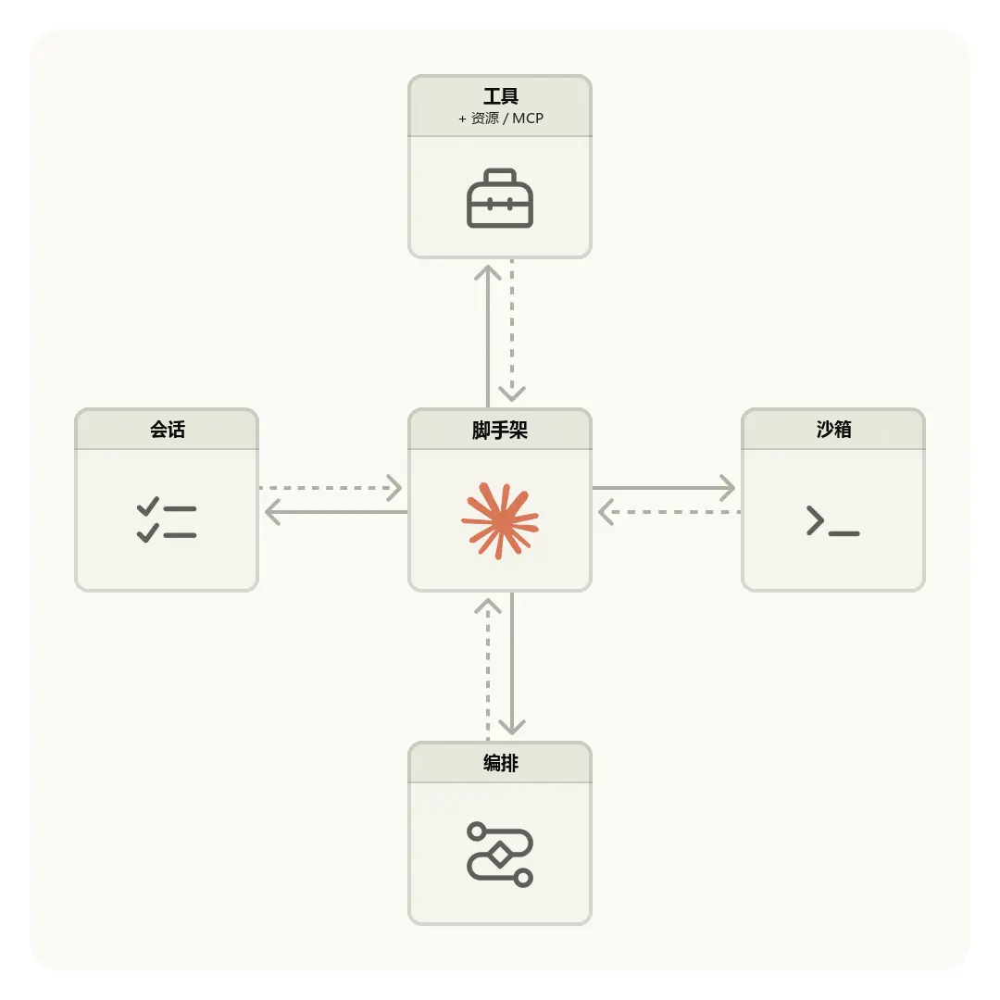
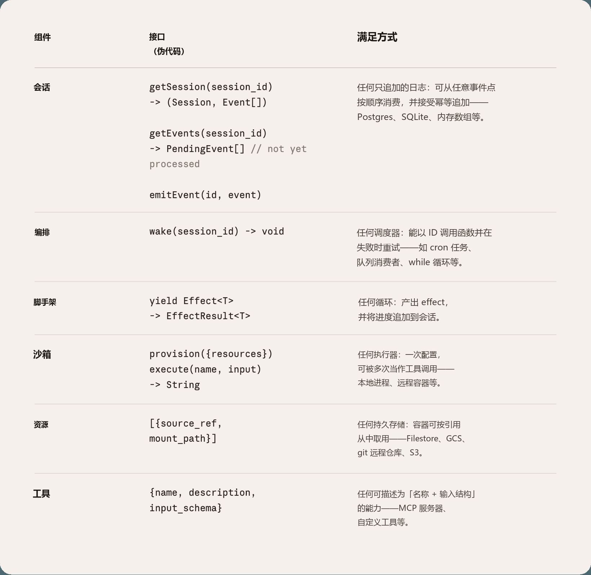
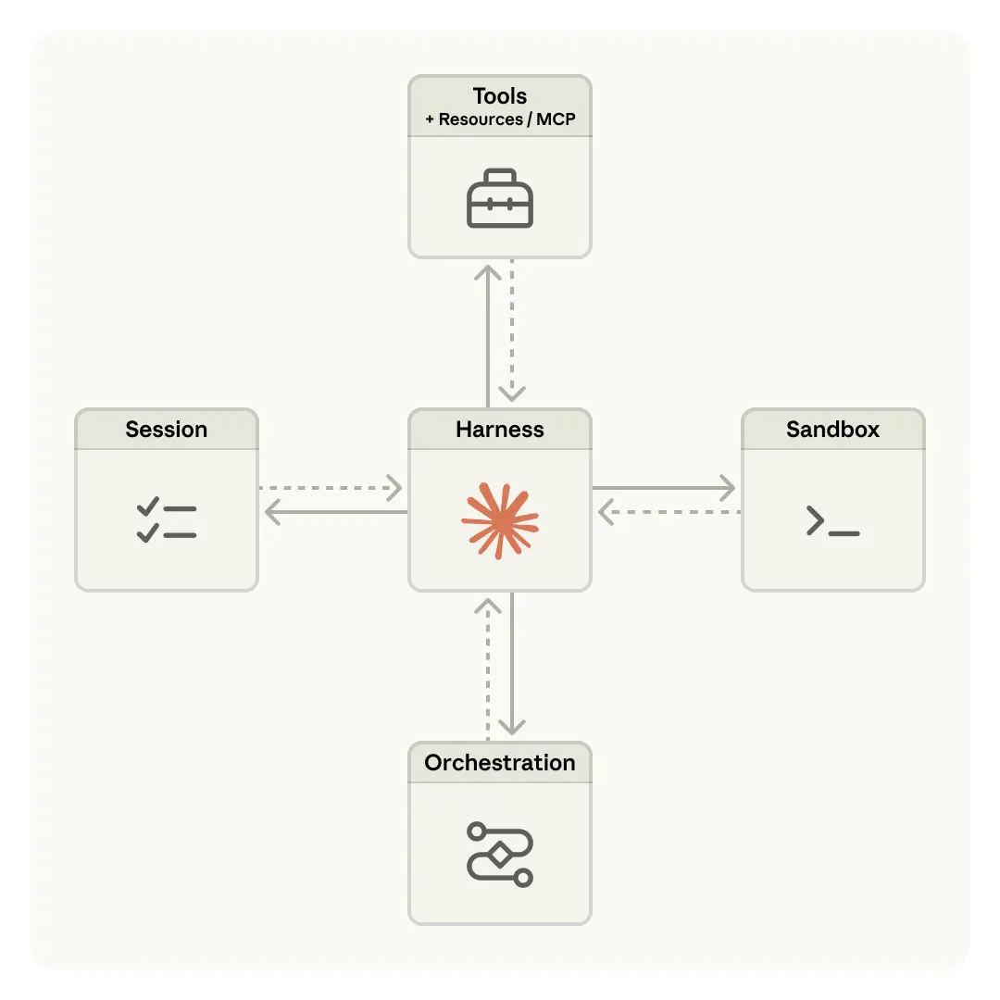
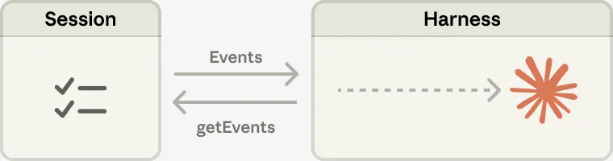
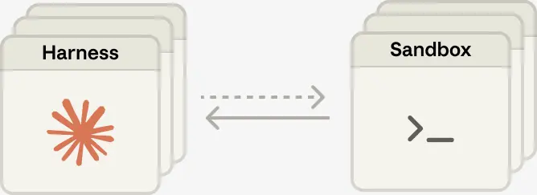

扩展 Managed Agents：将大脑与双手解耦
📖 中文摘要
专业术语注解
脚手架（harness）：调用Claude并把其工具调用路由到相应基础设施的循环会话（session）：只追加、记录智能体全部事件、位于上下文窗口之外的日志元脚手架：只规定通用接口、不绑定具体实现，可容纳多种脚手架的系统首token时延（TTFT）：会话从接下任务到产出第一个响应token之间的等待时间宠物对牲畜：有名字、需精心照料且不可替换的服务器，与可随时丢弃重建的实例之别📄 中文全文
- 类别： 工程（Engineering）
- 来源： https://www.anthropic.com/research/managed-agents
工程（Engineering） 2026 年 4 月 8 日 已发布 2026 年 4 月 8 日 团队 工程 主题
相关文章 * 公告 2026 年 5 月 18 日 Anthropic 收购 Stainless
查看更多 按照我们的文档开始使用 Claude Managed Agents。
工程博客里一个持续出现的话题，是如何构建高效的智能体并设计脚手架来支撑长时运行的任务。这些工作有一条共同主线：脚手架把关于 Claude 靠自己做不到什么的假设编码了进去。然而，这些假设需要经常受到质疑，因为随着模型进步，它们可能会过时。
仅举一例，在此前的工作中我们发现，Claude Sonnet 4.5 在察觉上下文上限临近时会过早收尾任务——这种行为有时被称为「上下文焦虑」（context anxiety）。我们通过在脚手架中加入上下文重置来解决它。但当我们把同一套脚手架用到 Claude Opus 4.5 上时，发现这种行为消失了。那些重置成了累赘。
我们预计脚手架会持续演进。因此我们构建了 Managed Agents：这是 Claude Platform 中的一项托管服务，通过一小组接口替你运行长时程智能体，而这组接口的设计意在比任何具体实现都活得更久——包括我们今天正在运行的这些。
构建 Managed Agents 意味着要解决计算领域的一个老问题：如何为「尚未被构想出来的程序」设计一套系统。几十年前，操作系统通过把硬件虚拟化为抽象—— 进程（process）、文件（file） ——解决了这个问题，这些抽象足够通用，能容纳当时还不存在的程序。抽象比硬件活得更久。read() 命令并不关心自己访问的是 1970 年代的磁盘组还是现代的 SSD。上层的抽象保持稳定，下层的实现则可以自由变化。
Managed Agents 遵循同样的模式。我们把智能体的各个组成部分虚拟化了：会话（session，一份只追加、记录所发生一切的日志）、脚手架（harness，一个调用 Claude、并把 Claude 的工具调用路由到相应基础设施的循环）以及沙箱（sandbox，一个让 Claude 能运行代码、编辑文件的执行环境）。这样一来，每一部分的实现都可以被替换而不打扰其他部分。我们对这些接口的形态有明确主张，但对背后运行什么并不设限。

别养一只「宠物」
我们最初把所有智能体组件都放进一个容器里，这意味着会话、智能体脚手架和沙箱共享同一个环境。这种做法有好处，比如文件编辑就是直接的系统调用，也不需要设计服务边界。 但把一切耦合进同一个容器后，我们撞上了一个老的基础设施问题：我们养了一只宠物。在「宠物对牲畜」（pets-vs-cattle）的类比中，宠物是有名字、需要精心照料、失去不起的个体，而牲畜则是可以互换的。在我们的情形里，服务器成了那只宠物：容器一旦故障，会话就丢了；容器一旦无响应，我们就得把它照料回健康状态。 照料容器，意味着要调试无响应的卡死会话。我们唯一的观察窗口是 WebSocket 事件流，但它无法告诉我们故障出在 哪里：脚手架里的 bug、事件流中的丢包、或者容器下线，表现出来的样子都一样。为了弄清哪里出了错，工程师不得不在容器里打开一个 shell；但由于那个容器往往还存着用户数据，这种做法实际上等于我们根本没有调试能力。 第二个问题在于，脚手架假定 Claude 处理的一切都和它待在同一个容器里。当客户要求把 Claude 接入他们的虚拟私有云时，他们要么得把自己的网络与我们的对等互联，要么得在自己的环境里运行我们的脚手架。一个被写死进脚手架的假设，在我们想把它接到不同基础设施上时成了麻烦。
把大脑与双手解耦
我们最终采用的方案，是把我们所说的「大脑」（Claude 及其脚手架）与「双手」（执行动作的沙箱和工具）以及「会话」（会话事件的日志）两者都解耦开来。每一部分都变成一个对其他部分几乎不作假设的接口，也都可以独立地故障或被替换。
脚手架搬出容器。 把大脑与双手解耦，意味着脚手架不再住在容器里。它调用容器的方式，和调用任何其他工具一样：execute(name, input) → string。容器于是成了牲畜。如果容器挂了，脚手架会把这次故障当作一次工具调用错误捕获下来，再传回给 Claude。如果 Claude 决定重试，就可以用一套标准配方重新初始化一个新容器：provision({resources})。我们再也不必把故障容器照料回健康状态。
从脚手架故障中恢复。 脚手架同样成了牲畜。由于会话日志位于脚手架之外，脚手架里没有任何东西需要在崩溃后存活。当某个脚手架失效时，可以用 wake(sessionId) 重启一个新的，再用 getSession(id) 取回事件日志，从最后一个事件继续。在智能体循环中，脚手架通过 emitEvent(id, event) 向会话写入，以保留一份持久的事件记录。

安全边界。 在耦合式设计中，Claude 生成的任何不受信任代码都与凭据运行在同一个容器里——因此一次提示注入只要说服 Claude 去读取自己的环境就够了。攻击者一旦拿到那些令牌，就能派生出全新的、不受限制的会话，并把工作委派给它们。收窄权限范围是一种显而易见的缓解手段，但这同样编码了一个关于「Claude 拿着受限令牌做不了什么」的假设——而 Claude 正变得越来越聪明。结构性的解决办法，是确保这些令牌永远无法从 Claude 生成代码所运行的沙箱中被触达。 我们用两种模式来保证这一点。认证信息可以随某个资源捆绑，也可以存放在沙箱之外的保险库里。对于 Git，我们在沙箱初始化时用每个仓库的访问令牌来克隆仓库，并把它接入本地的 git remote。Git 的push 和 pull 能在沙箱内部工作，而智能体从头到尾都不必自己经手令牌。对于自定义工具，我们支持 MCP，并把 OAuth 令牌存放在安全的保险库中。Claude 通过一个专用代理调用 MCP 工具；该代理接收一个与会话关联的令牌，随后便可从保险库取出相应凭据，再向外部服务发起调用。脚手架自始至终都不会得知任何凭据。
会话不是 Claude 的上下文窗口
长时程任务往往超出 Claude 上下文窗口的长度，而应对这一问题的标准做法，都涉及「保留什么」这类不可逆的决定。我们在此前关于上下文工程的工作中探讨过这些技术。例如，压缩让 Claude 能保存其上下文窗口的摘要，记忆工具则让 Claude 把上下文写入文件，从而实现跨会话的学习。这可以与上下文裁剪配合使用，选择性地移除旧的工具结果或思考块之类的 token。
但是，选择性地保留或丢弃上下文这种不可逆决定，可能导致失败。我们很难知道未来的轮次会需要哪些 token。如果消息被某次压缩步骤改写，脚手架会把压缩过的消息从 Claude 的上下文窗口中移除，而它们只有在被存储下来时才可恢复。此前的研究探讨过解决之道：把上下文存储为一个活在上下文窗口 之外 的对象。例如，上下文可以是 REPL 中的一个对象，让大语言模型通过编写代码来过滤或切片，以编程方式访问它。
 在 Managed Agents 中，会话提供了同样的好处，充当了一个位于 Claude 上下文窗口之外的上下文对象。不过，上下文并不是存放在沙箱或 REPL 里，而是持久地存进会话日志中。
在 Managed Agents 中，会话提供了同样的好处，充当了一个位于 Claude 上下文窗口之外的上下文对象。不过，上下文并不是存放在沙箱或 REPL 里，而是持久地存进会话日志中。getEvents(), 这个接口让「大脑」能够通过选取事件流中按位置切分的片段来查询上下文。这个接口使用起来很灵活：大脑既可以从上次读到的地方接着往下读，也可以回退到某个特定时刻之前的几个事件、看清来龙去脉，还可以在某个特定动作之前重读上下文。
任何取回的事件，也可以在传入 Claude 的上下文窗口之前先在脚手架里做变换。这些变换可以是脚手架所编码的任何形式，包括为了获得较高提示缓存命中率而做的上下文组织，以及上下文工程。我们把「会话中可恢复的上下文存储」与「脚手架中任意的上下文管理」这两件事分开，是因为无法预测未来的模型会需要什么样的具体上下文工程。这些接口把上下文管理推给脚手架，只保证会话是持久的、并且可供查询。
多个大脑，多双手
多个大脑。 把大脑与双手解耦，解决了我们最早收到的客户抱怨之一。当团队想让 Claude 使用他们自己 VPC 里的资源时，唯一的办法是把他们的网络与我们的对等互联，因为装着脚手架的那个容器假定所有资源都近在咫尺。一旦脚手架不再待在容器里，这个假设就不复存在。同一改动还带来了性能回报。我们最初把大脑放进容器时，意味着有多少个大脑就得有多少个容器。对每个大脑而言，在容器准备好之前都无法进行推理；每个会话都要预先付清整套容器启动成本。每一个会话——哪怕根本不会碰沙箱——都得克隆仓库、启动进程、从我们的服务器拉取待处理事件。
这段空转时间体现在首 token 时延（time-to-first-token，TTFT）上，它衡量的是一个会话从接下任务到产出第一个响应 token 之间要等待多久。TTFT 正是用户感受最 真切 的那部分延迟。
把大脑与双手解耦，意味着容器只在需要时，才由大脑通过一次工具调用 (execute(name, input) → string) 来准备。因此，一个当下并不需要容器的会话就不必为它等待。只要编排层从会话日志中拉取到待处理事件，推理就可以开始。采用这套架构后，我们的 p50 TTFT 下降了约 60%，p95 下降了 90% 以上。扩展到多个大脑，只不过意味着启动多个无状态脚手架，并只在需要时才把它们接上双手。
多双手。 我们还希望每个大脑都能接上多双手。在实践中，这意味着 Claude 必须对多个执行环境进行推理，并决定把工作发往哪里——这比在单个 shell 里操作是更难的认知任务。我们最初把大脑放在单个容器里，是因为早期的模型还做不到这一点。随着智能水平提升，单个容器反而成了限制：一旦那个容器故障，大脑正探入的每一只手的状态都会丢失。
把大脑与双手解耦后，每只手都成了一个工具：execute(name, input) → string——送进去一个名字和输入，返回来一个字符串。这个接口支持任何自定义工具、任何 MCP 服务器，以及我们自己的工具。脚手架并不知道沙箱究竟是一个容器、一部手机，还是一个 Pokémon 模拟器。而且由于没有任何一只手与某个大脑绑定，大脑之间可以互相转交双手。

结论
我们面对的是一个老挑战：如何为「尚未被构想出来的程序」设计一套系统。操作系统之所以能延续数十年，靠的是把硬件虚拟化为足够通用的抽象，以容纳当时还不存在的程序。借助 Managed Agents，我们希望设计出一套能容纳未来脚手架、沙箱，或 Claude 周边其他组件的系统。 本着同样的精神，Managed Agents 是一套元脚手架（meta-harness），对未来 Claude 究竟需要哪 一种具体 脚手架不持立场。它更像是一个带有通用接口的系统，能容纳许多不同的脚手架。例如，Claude Code 就是一套出色的脚手架，我们在各类任务中广泛使用。我们也已经证明，针对特定任务的智能体脚手架在狭窄领域里表现卓越。Managed Agents 能容纳上述任何一种，并随着时间推移与 Claude 的智能水平相匹配。 元脚手架的设计，意味着要对 Claude 周边的接口有明确主张：我们预期 Claude 需要具备操纵状态（会话）和执行计算（沙箱）的能力，也预期 Claude 需要能够扩展到多个大脑与多双手。我们设计这些接口，是为了让它们能在长时间跨度上可靠、安全地运行。但对于 Claude 究竟需要多少个大脑、多少双手、以及它们位于何处，我们不作任何假设。
作者与致谢
致谢
本文由 Lance Martin、Gabe Cemaj 和 Michael Cohen 撰写。感谢 N.T.A. 和 Jeremy Fox 就这些话题带来的有益讨论。特别感谢 Agents API 团队和 Jake Eaton 的贡献。
▸ 英文原文（点击展开）
Scaling Managed Agents:Decoupling the brain from the hands
- Date: 2026-04-08
- Source: https://www.anthropic.com/research/managed-agents
Scaling Managed Agents : Decoupling the brain from the hands
Published Apr 8, 2026 Team Engineering Topics
Related articles * Announcements May 18, 2026 Anthropic acquires Stainless
View more Get started with Claude Managed Agents by following ourdocs.
A running topic on the Engineering Blog is how to build effective agents and design harnesses for long-running work. A common thread across this work is that harnesses encode assumptions about what Claude can’t do on its own. However, those assumptions need to be frequently questioned because they can go stale as models improve.
As just one example, in prior work we found that Claude Sonnet 4.5 would wrap up tasks prematurely as it sensed its context limit approaching—a behavior sometimes called “context anxiety.” We addressed this by adding context resets to the harness. But when we used the same harness on Claude Opus 4.5, we found that the behavior was gone. The resets had become dead weight.
We expect harnesses to continue evolving. So we built Managed Agents: a hosted service in the Claude Platform that runs long-horizon agents on your behalf through a small set of interfaces meant to outlast any particular implementation—including the ones we run today.
Building Managed Agents meant solving an old problem in computing: how to design a system for “programs as yet unthought of.” Decades ago, operating systems solved this problem by virtualizing hardware into abstractions— process, file —general enough for programs that didn't exist yet. The abstractions outlasted the hardware. The read() command is agnostic as to whether it’s accessing a disk pack from the 1970s or a modern SSD. The abstractions on top stayed stable while the implementations underneath changed freely.
Managed Agents follow the same pattern. We virtualized the components of an agent: a session (the append-only log of everything that happened), a harness (the loop that calls Claude and routes Claude’s tool calls to the relevant infrastructure), and a sandbox (an execution environment where Claude can run code and edit files). This allows the implementation of each to be swapped without disturbing the others. We're opinionated about the shape of these interfaces, not about what runs behind them.

Don’t adopt a pet
We started by placing all agent components into a single container, which meant the session, agent harness, and sandbox all shared an environment. There were benefits to this approach, including that file edits are direct syscalls, and there were no service boundaries to design. But by coupling everything into one container, we ran into an old infrastructure problem: we’d adopted a pet. In the pets-vs-cattle analogy, a pet is a named, hand-tended individual you can’t afford to lose, while cattle are interchangeable. In our case, the server became that pet; if a container failed, the session was lost. If a container was unresponsive, we had to nurse it back to health. Nursing containers meant debugging unresponsive stuck sessions. Our only window in was the WebSocket event stream, but that couldn’t tell us where failures arose, which meant that a bug in the harness, a packet drop in the event stream, or a container going offline all presented the same. To figure out what went wrong, an engineer had to open a shell inside the container, but because that container often also held user data, that approach essentially meant we lacked the ability to debug. A second issue was that the harness assumed that whatever Claude worked on lived in the container with it. When customers asked us to connect Claude to their virtual private cloud, they had to either peer their network with ours, or run our harness in their own environment. An assumption baked into the harness became a problem when we wanted to connect it to different infrastructure.
Decouple the brain from the hands
The solution we arrived at was to decouple what we thought of as the “brain” (Claude and its harness) from both the “hands” (sandboxes and tools that perform actions) and the “session” (the log of session events). Each became an interface that made few assumptions about the others, and each could fail or be replaced independently.
The harness leaves the container. Decoupling the brain from the hands meant the harness no longer lived inside the container. It called the container the way it called any other tool: execute(name, input) → string. The container became cattle. If the container died, the harness caught the failure as a tool-call error and passed it back to Claude. If Claude decided to retry, a new container could be reinitialized with a standard recipe: provision({resources}). We no longer had to nurse failed containers back to health.
Recovering from harness failure. The harness also became cattle. Because the session log sits outside the harness, nothing in the harness needs to survive a crash. When one fails, a new one can be rebooted with wake(sessionId), use getSession(id) to get back the event log, and resume from the last event. During the agent loop, the harness writes to the session with emitEvent(id, event) in order to keep a durable record of events.
 The security boundary. In the coupled design, any untrusted code that Claude generated was run in the same container as credentials—so a prompt injection only had to convince Claude to read its own environment. Once an attacker has those tokens, they can spawn fresh, unrestricted sessions and delegate work to them. Narrow scoping is an obvious mitigation, but this encodes an assumption about what Claude can't do with a limited token—and Claude is getting increasingly smart. The structural fix was to make sure the tokens are never reachable from the sandbox where Claude’s generated code runs.
We used two patterns to ensure this. Auth can be bundled with a resource or held in a vault outside the sandbox. For Git, we use each repository’s access token to clone the repo during sandbox initialization and wire it into the local git remote. Git
The security boundary. In the coupled design, any untrusted code that Claude generated was run in the same container as credentials—so a prompt injection only had to convince Claude to read its own environment. Once an attacker has those tokens, they can spawn fresh, unrestricted sessions and delegate work to them. Narrow scoping is an obvious mitigation, but this encodes an assumption about what Claude can't do with a limited token—and Claude is getting increasingly smart. The structural fix was to make sure the tokens are never reachable from the sandbox where Claude’s generated code runs.
We used two patterns to ensure this. Auth can be bundled with a resource or held in a vault outside the sandbox. For Git, we use each repository’s access token to clone the repo during sandbox initialization and wire it into the local git remote. Git push and pull work from inside the sandbox without the agent ever handling the token itself. For custom tools, we support MCP and store OAuth tokens in a secure vault. Claude calls MCP tools via a dedicated proxy; this proxy takes in a token associated with the session. The proxy can then fetch the corresponding credentials from the vault and make the call to the external service. The harness is never made aware of any credentials.
The session is not Claude’s context window
Long-horizon tasks often exceed the length of Claude’s context window, and the standard ways to address this all involve irreversible decisions about what to keep. We’ve explored these techniques in prior work on context engineering. For example, compaction lets Claude save a summary of its context window and the memory tool lets Claude write context to files, enabling learning across sessions. This can be paired with context trimming, which selectively removes tokens such as old tool results or thinking blocks. But irreversible decisions to selectively retain or discard context can lead to failures. It is difficult to know which tokens the future turns will need. If messages are transformed by a compaction step, the harness removes compacted messages from Claude’s context window, and these are recoverable only if they are stored. Prior work has explored ways to address this by storing context as an object that lives outside the context window. For example, context can be an object in a REPL that the LLM programmatically accesses by writing code to filter or slice it.

In Managed Agents, the session provides this same benefit, serving as a context object that lives outside Claude’s context window. But rather than be stored within the sandbox or REPL, context is durably stored in the session log. The interface,getEvents(), allows the brain to interrogate context by selecting positional slices of the event stream. The interface can be used flexibly, allowing the brain to pick up from wherever it last stopped reading, rewinding a few events before a specific moment to see the lead up, or rereading context before a specific action.
Any fetched events can also be transformed in the harness before being passed to Claude’s context window. These transformations can be whatever the harness encodes, including context organization to achieve a high prompt cache hit rate and context engineering. We separated the concerns of recoverable context storage in the session and arbitrary context management in the harness because we can’t predict what specific context engineering will be required in future models. The interfaces push that context management into the harness, and only guarantee that the session is durable and available for interrogation.
Many brains, many hands
Many brains. Decoupling the brain from the hands solved one of our earliest customer complaints. When teams wanted Claude to work against resources in their own VPC, the only path was to peer their network with ours, because the container holding the harness assumed every resource sat next to it. Once the harness was no longer in the container, that assumption went away. The same change had a performance payoff. When we initially put the brain in a container, it meant that many brains required as many containers. For each brain, no inference could happen until that container was provisioned; every session paid the full container setup cost up front. Every session, even ones that would never touch the sandbox, had to clone the repo, boot the process, fetch pending events from our servers.
That dead time is expressed in time-to-first-token (TTFT), which measures how long a session waits between accepting work and producing its first response token. TTFT is the latency the user most acutely feels.
Decoupling the brain from the hands means that containers are provisioned by the brain via a tool call (execute(name, input) → string) only if they are needed. So a session that didn't need a container right away didn't wait for one. Inference could start as soon as the orchestration layer pulled pending events from the session log. Using this architecture, our p50 TTFT dropped roughly 60% and p95 dropped over 90%. Scaling to many brains just meant starting many stateless harnesses, and connecting them to hands only if needed.
Many hands. We also wanted the ability to connect each brain to many hands. In practice, this means Claude must reason about many execution environments and decide where to send work—a harder cognitive task than operating in a single shell. We started with the brain in a single container because earlier models weren't capable of this. As intelligence scaled, the single container became the limitation instead: when that container failed, we lost state for every hand that the brain was reaching into.
Decoupling the brain from the hands makes each hand a tool, execute(name, input) → string: a name and input go in, and a string is returned. That interface supports any custom tool, any MCP server, and our own tools. The harness doesn’t know whether the sandbox is a container, a phone, or a Pokémon emulator. And because no hand is coupled to any brain, brains can pass hands to one another.

Conclusion
The challenge we faced is an old one: how to design a system for “programs as yet unthought of.” Operating systems have lasted decades by virtualizing the hardware into abstractions general enough for programs that didn't exist yet. With Managed Agents, we aimed to design a system that accommodates future harnesses, sandboxes, or other components around Claude. Managed Agents is a meta-harness in the same spirit, unopinionated about the specific harness that Claude will need in the future. Rather, it is a system with general interfaces that allow many different harnesses. For example, Claude Code is an excellent harness that we use widely across tasks. We’ve also shown that task-specific agent harnesses excel in narrow domains. Managed Agents can accommodate any of these, matching Claude’s intelligence over time. Meta-harness design means being opinionated about the interfaces around Claude: we expect that Claude will need the ability to manipulate state (the session) and perform computation (the sandbox). We also expect that Claude will require the ability to scale to many brains and many hands. We designed the interfaces so that these can be run reliably and securely over long time horizons. But we make no assumptions about the number or location of brains or hands that Claude will need.
Authors & acknowledgements
Acknowledgements
Written by Lance Martin, Gabe Cemaj, and Michael Cohen. Thanks to N.T.A. and Jeremy Fox for helpful conversations on these topics. Special thanks to the Agents API team and Jake Eaton for their contributions.